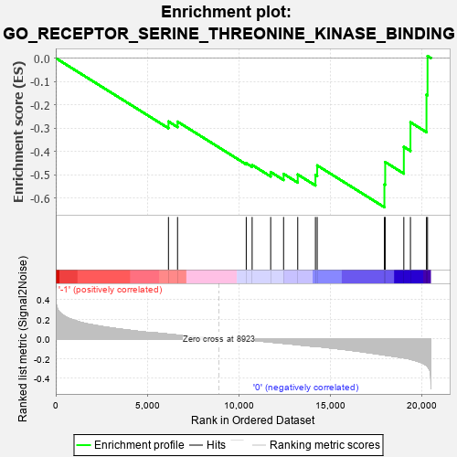
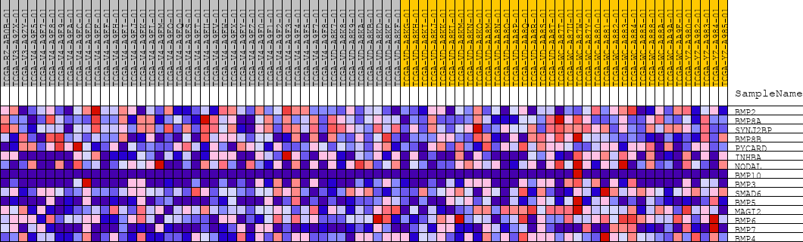
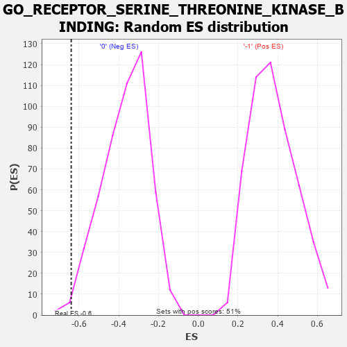

| | | Dataset | GSEAExpression.phenotype_uvm.cls#-1_versus_0 |
| Phenotype | phenotype_uvm.cls#-1_versus_0 |
| Upregulated in class | 0 |
| GeneSet | GO_RECEPTOR_SERINE_THREONINE_KINASE_BINDING |
| Enrichment Score (ES) | -0.63913834 |
| Normalized Enrichment Score (NES) | -1.7467806 |
| Nominal p-value | 0.014256619 |
| FDR q-value | 1.0 |
| FWER p-Value | 0.929 |
Table: GSEA Results Summary

Fig 1: Enrichment plot: GO_RECEPTOR_SERINE_THREONINE_KINASE_BINDING
Profile of the Running ES Score & Positions of GeneSet Members on the Rank Ordered List
| PROBE | DESCRIPTION
(from dataset) | GENE SYMBOL | GENE_TITLE | RANK IN GENE LIST | RANK METRIC SCORE | RUNNING ES | CORE ENRICHMENT | | 1 | BMP2 | na | | | 6164 | 0.049 | -0.2717 | No |
| 2 | BMP8A | na | | | 6661 | 0.039 | -0.2724 | No |
| 3 | SYNJ2BP | na | | | 10418 | -0.008 | -0.4506 | No |
| 4 | BMP8B | na | | | 10740 | -0.014 | -0.4579 | No |
| 5 | PYCARD | na | | | 11755 | -0.032 | -0.4882 | No |
| 6 | INHBA | na | | | 12460 | -0.044 | -0.4961 | No |
| 7 | NODAL | na | | | 13234 | -0.059 | -0.4988 | No |
| 8 | BMP10 | na | | | 14202 | -0.076 | -0.5008 | No |
| 9 | BMP3 | na | | | 14298 | -0.076 | -0.4600 | No |
| 10 | SMAD6 | na | | | 17973 | -0.164 | -0.5416 | Yes |
| 11 | BMP5 | na | | | 18017 | -0.165 | -0.4454 | Yes |
| 12 | MAGI2 | na | | | 19036 | -0.192 | -0.3803 | Yes |
| 13 | BMP6 | na | | | 19398 | -0.206 | -0.2749 | Yes |
| 14 | BMP7 | na | | | 20275 | -0.270 | -0.1564 | Yes |
| 15 | BMP4 | na | | | 20333 | -0.282 | 0.0090 | Yes |
Table: GSEA details [plain text format]

Fig 2: GO_RECEPTOR_SERINE_THREONINE_KINASE_BINDING
Blue-Pink O' Gram in the Space of the Analyzed GeneSet

Fig 3: GO_RECEPTOR_SERINE_THREONINE_KINASE_BINDING: Random ES distribution
Gene set null distribution of ES for GO_RECEPTOR_SERINE_THREONINE_KINASE_BINDING